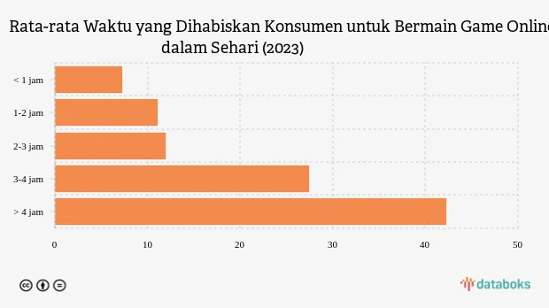
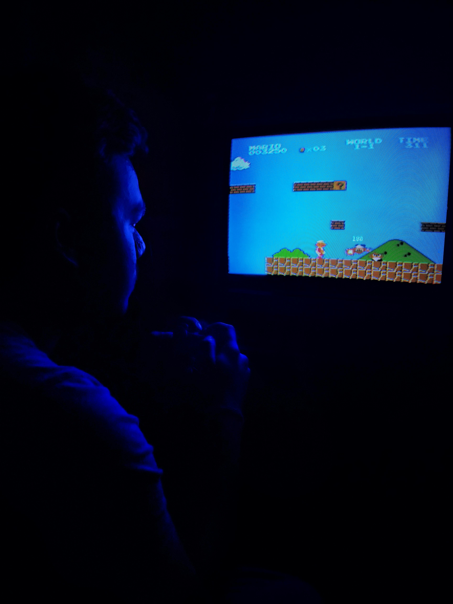

Kecanduan game online adalah sebuah gangguan mental, atau gaming disorder, yang membuat seseorang kehilangan kendali atas kebiasaan bermain game, sehingga aktivitas tersebut berdampak negatif pada aspek kehidupan lain seperti sekolah, pekerjaan, hubungan sosial, dan kesehatan diri.
Gangguan ini ditandai dengan keinginan terus-menerus untuk bermain, munculnya gejala penarikan seperti cemas atau marah saat tidak bermain, serta kehilangan minat pada hobi lain.
Bahaya Kecanduan Game Online


Apa itu kecanduan game online?
Studi tahun 2021 oleh Gurusinga:
Data menunjukkan 77,5% remaja putra dan 22,5% remaja putri yang mengalami kecanduan, meskipun
data ini spesifik untuk usia 15-18 tahun.

Data menunjukkan 77,5% remaja putra dan 22,5% remaja putri yang mengalami kecanduan, meskipun
data ini spesifik untuk usia 15-18 tahun.

Rata-rata anak
menghabiskan
6 jam/hari untuk
game online
menghabiskan
6 jam/hari untuk
game online

50%
mengalami
gangguan tidur
mengalami
gangguan tidur

Turunnya
prestasi akademik
karena kecanduan
prestasi akademik
karena kecanduan
Dampak kecanduan game online
Mental dan Emosional
Kesehatan Fisik
Kehidupan Sosial dan
Akademik/Pekerjaan
Akademik/Pekerjaan

Stres dan Kecemasan:
Kegagalan mencapai target dalam permainan dapat memicu stres, sementara keinginan terus-menerus untuk bermain menambah beban pikiran.

Gangguan Tidur:
Penggunaan perangkat elektronik terlalu lama sebelum tidur dapat mengurangi produksi hormon melatonin, menyebabkan insomnia.

Penurunan Prestasi Akademik:
Siswa yang kecanduan cenderung menghabiskan waktu seharusnya untuk belajar, sehingga kinerja akademik menurun.
Depresi:
Ketergantungan pada game online dapat menyebabkan isolasi dari lingkungan sosial, meningkatkan risiko depresi.
Kelelahan dan Nyeri:
Duduk atau tidur dalam posisi yang salah terlalu lama dapat menyebabkan kelelahan, nyeri punggung, dan nyeri sendi.
Penurunan Produktivitas:
Keterlambatan penyelesaian tugas dan kurang fokus dapat menurunkan produktivitas di pekerjaan atau sekolah.
Perilaku Agresif:
Terpapar konten kekerasan dalam game dapat memicu perilaku agresif pada pemain.
Gangguan Motorik:
Aktivitas motorik yang terbatas dan gerakan berulang-ulang dapat menyebabkan gangguan pada saraf tangan.
Isolasi Sosial:
Keterlibatan intens dalam game online dapat mengisolasi seseorang dari keluarga dan teman-teman, mengganggu hubungan interpersonal.

Sering berlebihan bermain game tapi tidak
sadar sudah kecanduan?
ayo coba tes sebelum terlambat
sadar sudah kecanduan?
ayo coba tes sebelum terlambat
Apakah kamu kecanduan game?
Mulai test

Merasa sudah terjerumus terlalu dalam?
segera hubungi profesional agar segera
mendapatkan penanganan
segera hubungi profesional agar segera
mendapatkan penanganan
Butuh bantuan profesional?
Ya

Introspeksi Diri dan Tetapkan Batasan
Ciptakan jadwal harian yang seimbang
Temukan Alternatif yang Menyehatkan
Hindari pemicu yang memicu keinginan bermain game
Perbanyak sosialisasi di dunia nyata
Cari Bantuan Profesional
Tips mengatasi kecanduan game online
Kendalikan Game, Jangan Biarkan Game Mengendalikanmu
Kecanduan game online memiliki dampak negatif serius terhadap perkembangan remaja, seperti penurunan prestasi akademik, gangguan interaksi sosial dan isolasi, masalah kesehatan fisik dan mental, serta perilaku antisosial, sehingga memerlukan pengawasan ketat dari orang tua dan tindakan pencegahan serta pengendalian penggunaan teknologi secara bijak untuk meminimalkan risiko tersebut dan mengoptimalkan manfaat teknologi.
© 2025 Maya Ayu Rosita M.All Rights Reserved